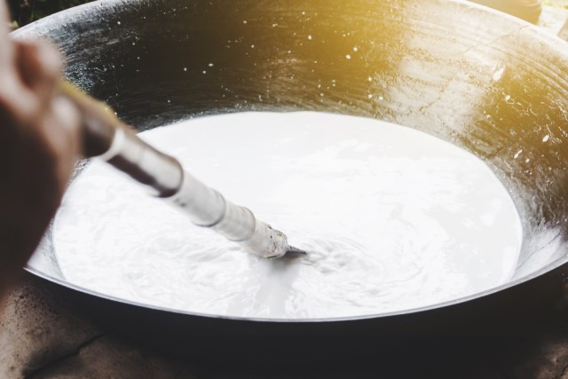

Resep Sayur Lodeh
 Bahan - bahan:
Bahan - bahan:
- 200 gram nangka muda, dipotong-potong
- 300 gram labu siam, dipotong-potong
- 8 buah kacang panjang, dipotong-potong
- 1 buah terong, dibelah dua bagian, dipotong-potong
- 100 gram daun melinjo muda
- 3 buah cabai hijau besar, diiris bulat
- 2 lembar daun salam
- 3 cm lengkuas, dimemarkan
- 2 sendok makan garam
- 2 sendok teh gula merah sisir
- 2.000 ml santan dari 1 butir kelapa
Bumbu halus:
- 8 butir bawang merah
- 3 siung bawang putih
- 3 butir kemiri, sangrai
- 1.2 sendok teh terasi goreng
- 2 cm kencur
- 1/2 sendork teh ketumbar
Langkah - langkah
- Siapkan panci untuk merebus. Masukan santan, daun salam, lengkuas dan bumbu halus. Rebus bahan-bahan tersebut sampai harum.

- Setelah kuah santan mengeluarkan aroma harum. Tambahkan nangka muda, garam, dan gula merah, lalu rebus hingga setengah matang.

- Terakhir, masukkan labu siam, kacang panjang, terong, daun melinjo, dan cabai hijau. Aduk-aduk sampai tercampur rata. Masak sayur lodeh sampai semua sayuran menjadi lembut atau matang.

- Matikan kompor, dan sayur lodeh siap disajikan dengan nasi hangat. Ditambah dengan ikan asin dan sambal akan menambah kenikmatan makan siang.